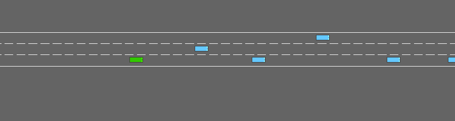
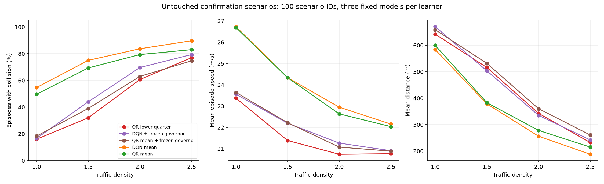
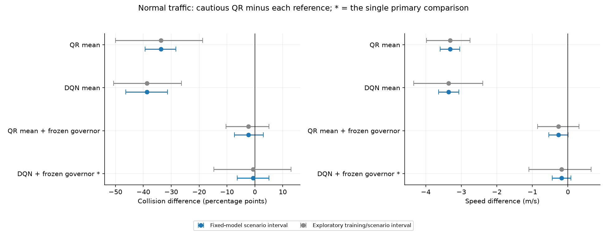

QR lower quarter

DEEP RL / LOCKED CONFIRMATION STUDY
Six frozen mixed-density networks, five deployment rules, and no changes to training, checkpoints, risk level or speed thresholds after inspecting the reserved results. Scenario IDs 20000–20099 were verified unused before the design was locked.
Locked design and model hashes · Preflight audit · Full results · Archived development comparisons · Training coverage and prediction diagnostics
The predeclared criterion is not met: cautious QR minus DQN with its frozen 25 m/s governor is -0.7 percentage points, with an approximate conditional 95% interval of [-6.3, 5.0] pp.
The average-speed difference is -0.18 m/s. This is a comparison of the locked policies; a collision advantage does not establish a speed-independent effect.
The criterion requires the upper endpoint to be strictly below zero. It concerns new scenarios for this selected set of networks, not new training runs.
Cautious QR: 16.0% collisions at 23.37 m/s. Controlled DQN: 16.7% at 23.56 m/s.
Per-model collision differences (QR minus controlled DQN) are [9.0, 4.0, -15.0] percentage points. The interval permits effects in either direction; equivalence was not tested.
Each policy/density row contains 300 rollouts: three training models evaluated on the same 100 fresh scenario IDs. Those 300 observations are not treated as 300 independent scenario samples.

| Policy | Density | Collisions | Speed m/s | Distance m | Mean return | Worst 10% return |
|---|---|---|---|---|---|---|
| QR lower quarter | 1.0 | 16.0% | 23.37 | 642 | 3.17 | 0.10 |
| QR lower quarter | 1.5 | 32.0% | 21.39 | 516 | 0.63 | -1.78 |
| QR lower quarter | 2.0 | 60.7% | 20.74 | 343 | -0.59 | -1.95 |
| QR lower quarter | 2.5 | 77.0% | 20.77 | 232 | -1.05 | -1.97 |
| DQN + frozen governor | 1.0 | 16.7% | 23.56 | 670 | 3.76 | 0.17 |
| DQN + frozen governor | 1.5 | 44.0% | 22.20 | 503 | 1.27 | -1.62 |
| DQN + frozen governor | 2.0 | 69.7% | 21.27 | 335 | -0.28 | -1.84 |
| DQN + frozen governor | 2.5 | 79.3% | 20.91 | 242 | -0.80 | -1.93 |
| QR mean + frozen governor | 1.0 | 18.3% | 23.64 | 659 | 3.72 | 0.19 |
| QR mean + frozen governor | 1.5 | 39.0% | 22.22 | 532 | 1.44 | -1.49 |
| QR mean + frozen governor | 2.0 | 63.0% | 21.08 | 360 | -0.19 | -1.85 |
| QR mean + frozen governor | 2.5 | 74.7% | 20.89 | 261 | -0.73 | -1.90 |
| DQN mean | 1.0 | 54.7% | 26.73 | 584 | 4.73 | 0.05 |
| DQN mean | 1.5 | 75.0% | 24.34 | 378 | 1.03 | -1.43 |
| DQN mean | 2.0 | 83.7% | 22.95 | 256 | -0.36 | -1.83 |
| DQN mean | 2.5 | 89.7% | 22.16 | 188 | -0.89 | -1.93 |
| QR mean | 1.0 | 49.7% | 26.69 | 599 | 4.89 | -0.04 |
| QR mean | 1.5 | 69.3% | 24.33 | 383 | 1.02 | -1.39 |
| QR mean | 2.0 | 79.3% | 22.64 | 278 | -0.28 | -1.84 |
| QR mean | 2.5 | 83.0% | 22.04 | 215 | -0.72 | -1.90 |
Blue intervals resample scenario IDs while keeping all trained networks and policy pairings together. They estimate uncertainty over fresh scenarios conditional on the selected models. Gray intervals also resample training seed IDs; with only three model pairs, these remain exploratory. Only the starred collision contrast is primary; other effects are descriptive secondary comparisons without family-wise adjustment.

| Role | Reference | Density | Collision change pp | Conditional scenario interval pp | Exploratory crossed interval pp | Speed change m/s |
|---|---|---|---|---|---|---|
| Primary | DQN + frozen governor | 1.0 | -0.7 | [-6.3, 5.0] | [-14.7, 13.0] | -0.18 |
| Secondary | DQN + frozen governor | 1.5 | -12.0 | [-20.0, -4.0] | [-29.0, 5.0] | -0.81 |
| Secondary | DQN + frozen governor | 2.0 | -9.0 | [-15.7, -2.3] | [-17.7, -0.3] | -0.52 |
| Secondary | DQN + frozen governor | 2.5 | -2.3 | [-8.3, 3.3] | [-9.7, 4.3] | -0.14 |
| Secondary | QR mean + frozen governor | 1.0 | -2.3 | [-7.3, 3.0] | [-10.3, 5.0] | -0.27 |
| Secondary | QR mean + frozen governor | 1.5 | -7.0 | [-14.3, 0.0] | [-16.0, 1.7] | -0.84 |
| Secondary | QR mean + frozen governor | 2.0 | -2.3 | [-8.3, 3.7] | [-11.7, 6.7] | -0.34 |
| Secondary | QR mean + frozen governor | 2.5 | +2.3 | [-2.3, 7.0] | [-6.3, 11.0] | -0.12 |
| Secondary | DQN mean | 1.0 | -38.7 | [-46.3, -31.3] | [-50.7, -26.3] | -3.36 |
| Secondary | DQN mean | 1.5 | -43.0 | [-50.7, -35.3] | [-56.0, -29.0] | -2.95 |
| Secondary | DQN mean | 2.0 | -23.0 | [-30.3, -15.7] | [-32.3, -14.0] | -2.21 |
| Secondary | DQN mean | 2.5 | -12.7 | [-19.0, -7.0] | [-21.0, -4.7] | -1.39 |
| Secondary | QR mean | 1.0 | -33.7 | [-39.3, -28.3] | [-50.0, -18.7] | -3.32 |
| Secondary | QR mean | 1.5 | -37.3 | [-44.0, -30.7] | [-50.0, -24.7] | -2.95 |
| Secondary | QR mean | 2.0 | -18.7 | [-25.3, -12.3] | [-27.7, -9.0] | -1.89 |
| Secondary | QR mean | 2.5 | -6.0 | [-10.7, -1.7] | [-13.3, 1.7] | -1.27 |
Development used 30 scenarios per density/model and supported tuning and selection. Confirmation uses 100 fresh scenarios per density/model. The two blocks differ in initial traffic; these figures are shown without changing any policy.
| Policy | Density | Development collisions | Confirmation collisions | Development speed | Confirmation speed |
|---|---|---|---|---|---|
| QR lower quarter | 1.0 | 11.1% | 16.0% | 22.77 | 23.37 |
| QR lower quarter | 1.5 | 31.1% | 32.0% | 21.24 | 21.39 |
| QR lower quarter | 2.0 | 66.7% | 60.7% | 20.30 | 20.74 |
| QR lower quarter | 2.5 | 84.4% | 77.0% | 20.68 | 20.77 |
| DQN + frozen governor | 1.0 | 37.8% | 16.7% | 23.48 | 23.56 |
| DQN + frozen governor | 1.5 | 58.9% | 44.0% | 22.17 | 22.20 |
| DQN + frozen governor | 2.0 | 81.1% | 69.7% | 20.87 | 21.27 |
| DQN + frozen governor | 2.5 | 91.1% | 79.3% | 21.16 | 20.91 |
| QR mean + frozen governor | 1.0 | 25.6% | 18.3% | 23.35 | 23.64 |
| QR mean + frozen governor | 1.5 | 52.2% | 39.0% | 22.01 | 22.22 |
| QR mean + frozen governor | 2.0 | 73.3% | 63.0% | 20.94 | 21.08 |
| QR mean + frozen governor | 2.5 | 87.8% | 74.7% | 20.79 | 20.89 |
| DQN mean | 1.0 | 61.1% | 54.7% | 26.55 | 26.73 |
| DQN mean | 1.5 | 80.0% | 75.0% | 24.67 | 24.34 |
| DQN mean | 2.0 | 87.8% | 83.7% | 22.37 | 22.95 |
| DQN mean | 2.5 | 94.4% | 89.7% | 22.64 | 22.16 |
| QR mean | 1.0 | 50.0% | 49.7% | 26.41 | 26.69 |
| QR mean | 1.5 | 72.2% | 69.3% | 24.07 | 24.33 |
| QR mean | 2.0 | 80.0% | 79.3% | 22.32 | 22.64 |
| QR mean | 2.5 | 91.1% | 83.0% | 22.25 | 22.04 |
| Policy | Density | Training seed | Collisions | Speed m/s | Distance m |
|---|---|---|---|---|---|
| QR lower quarter | 1.0 | 0 | 29.0% | 24.18 | 620 |
| QR lower quarter | 1.0 | 1 | 14.0% | 23.62 | 649 |
| QR lower quarter | 1.0 | 2 | 5.0% | 22.32 | 656 |
| QR lower quarter | 1.5 | 0 | 46.0% | 21.97 | 479 |
| QR lower quarter | 1.5 | 1 | 29.0% | 21.31 | 524 |
| QR lower quarter | 1.5 | 2 | 21.0% | 20.89 | 545 |
| QR lower quarter | 2.0 | 0 | 64.0% | 21.10 | 337 |
| QR lower quarter | 2.0 | 1 | 61.0% | 20.75 | 334 |
| QR lower quarter | 2.0 | 2 | 57.0% | 20.38 | 356 |
| QR lower quarter | 2.5 | 0 | 80.0% | 20.66 | 233 |
| QR lower quarter | 2.5 | 1 | 79.0% | 21.00 | 217 |
| QR lower quarter | 2.5 | 2 | 72.0% | 20.65 | 248 |
| DQN + frozen governor | 1.0 | 0 | 20.0% | 23.59 | 660 |
| DQN + frozen governor | 1.0 | 1 | 10.0% | 23.59 | 690 |
| DQN + frozen governor | 1.0 | 2 | 20.0% | 23.48 | 662 |
| DQN + frozen governor | 1.5 | 0 | 44.0% | 22.17 | 500 |
| DQN + frozen governor | 1.5 | 1 | 38.0% | 22.13 | 536 |
| DQN + frozen governor | 1.5 | 2 | 50.0% | 22.30 | 474 |
| DQN + frozen governor | 2.0 | 0 | 77.0% | 21.34 | 294 |
| DQN + frozen governor | 2.0 | 1 | 69.0% | 21.17 | 348 |
| DQN + frozen governor | 2.0 | 2 | 63.0% | 21.29 | 363 |
| DQN + frozen governor | 2.5 | 0 | 84.0% | 21.01 | 218 |
| DQN + frozen governor | 2.5 | 1 | 79.0% | 20.69 | 244 |
| DQN + frozen governor | 2.5 | 2 | 75.0% | 21.03 | 265 |
| QR mean + frozen governor | 1.0 | 0 | 35.0% | 24.03 | 632 |
| QR mean + frozen governor | 1.0 | 1 | 13.0% | 23.70 | 671 |
| QR mean + frozen governor | 1.0 | 2 | 7.0% | 23.20 | 673 |
| QR mean + frozen governor | 1.5 | 0 | 55.0% | 22.61 | 490 |
| QR mean + frozen governor | 1.5 | 1 | 34.0% | 22.01 | 546 |
| QR mean + frozen governor | 1.5 | 2 | 28.0% | 22.05 | 559 |
| QR mean + frozen governor | 2.0 | 0 | 72.0% | 21.16 | 331 |
| QR mean + frozen governor | 2.0 | 1 | 63.0% | 21.01 | 360 |
| QR mean + frozen governor | 2.0 | 2 | 54.0% | 21.07 | 389 |
| QR mean + frozen governor | 2.5 | 0 | 84.0% | 20.69 | 222 |
| QR mean + frozen governor | 2.5 | 1 | 71.0% | 20.97 | 281 |
| QR mean + frozen governor | 2.5 | 2 | 69.0% | 21.01 | 279 |
| DQN mean | 1.0 | 0 | 58.0% | 26.57 | 565 |
| DQN mean | 1.0 | 1 | 54.0% | 26.93 | 579 |
| DQN mean | 1.0 | 2 | 52.0% | 26.69 | 607 |
| DQN mean | 1.5 | 0 | 77.0% | 24.51 | 355 |
| DQN mean | 1.5 | 1 | 76.0% | 23.70 | 385 |
| DQN mean | 1.5 | 2 | 72.0% | 24.81 | 395 |
| DQN mean | 2.0 | 0 | 88.0% | 23.12 | 228 |
| DQN mean | 2.0 | 1 | 80.0% | 22.45 | 288 |
| DQN mean | 2.0 | 2 | 83.0% | 23.28 | 253 |
| DQN mean | 2.5 | 0 | 91.0% | 22.58 | 169 |
| DQN mean | 2.5 | 1 | 88.0% | 21.59 | 199 |
| DQN mean | 2.5 | 2 | 90.0% | 22.30 | 195 |
| QR mean | 1.0 | 0 | 79.0% | 28.14 | 500 |
| QR mean | 1.0 | 1 | 44.0% | 26.60 | 632 |
| QR mean | 1.0 | 2 | 26.0% | 25.33 | 666 |
| QR mean | 1.5 | 0 | 95.0% | 25.88 | 260 |
| QR mean | 1.5 | 1 | 59.0% | 23.93 | 426 |
| QR mean | 1.5 | 2 | 54.0% | 23.20 | 462 |
| QR mean | 2.0 | 0 | 88.0% | 23.25 | 239 |
| QR mean | 2.0 | 1 | 81.0% | 22.40 | 282 |
| QR mean | 2.0 | 2 | 69.0% | 22.25 | 314 |
| QR mean | 2.5 | 0 | 91.0% | 21.95 | 178 |
| QR mean | 2.5 | 1 | 80.0% | 22.27 | 233 |
| QR mean | 2.5 | 2 | 78.0% | 21.89 | 235 |
Training seed 0, scenario 20000, density 1. This is one illustrative case, not evidence of typical performance.

python run_confirmation.py --jobs 3 validates and reuses saved outputs. --stage report regenerates the report. Models and selection rules remain locked by hashes and recorded settings.
Seeds 20000–20099 are now consumed confirmation data for this locked study. Any further model tuning must use development blocks, and a later confirmation needs a new untouched block (20100 onward). Existing development viewers are historical snapshots from before this confirmation.
Observed speeds, action interventions, partial observations, simulator simplifications, forecast error and only three training seeds limit interpretation. Return quantiles are not collision probabilities. This experiment does not establish a globally CVaR-optimal policy or real-road safety.